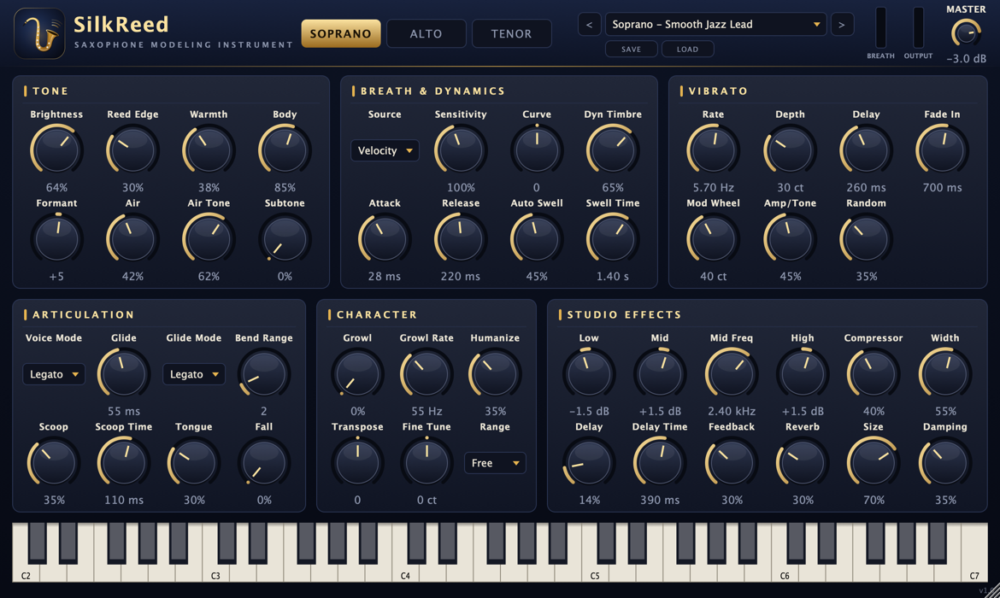

색소폰만을 위해
만든 가상악기 VST
A VST made for
saxophone,
and nothing else
SilkReed Sax는 여러 악기를 조금씩 흉내 내는 범용 음원이 아니라, 소프라노·알토·테너 색소폰 하나만을 위해 설계한 무료 가상악기입니다. 숨결과 리드의 떨림, 비브라토, 레가토, 스쿱과 그로울까지 색소폰 연주자가 실제로 쓰는 표현을 샘플 없이 실시간으로 모델링합니다. 열자마자 기본 프리셋 Soprano - Smooth Jazz Lead로 바로 연주할 수 있습니다. SilkReed Sax isn't a general-purpose sound module that imitates a bit of everything — it's a free virtual instrument designed for one thing: soprano, alto and tenor saxophone. Breath, reed buzz, vibrato, legato, scoops and growl — the expressions sax players actually use — are modelled in real time, with no samples. Open it and the default preset, Soprano - Smooth Jazz Lead, is ready to play.

색소폰 연주 방식에 맞춰 설계했습니다Designed around how a saxophone is played
범용 관악기 음원을 색소폰처럼 다듬어 쓰는 대신, 처음부터 색소폰이 소리를 내는 방식과 연주자가 표현하는 방식을 기준으로 엔진과 기본값을 잡았습니다. 색소폰다운 소리를 만드는 네 가지 요소가 SilkReed Sax에서는 이렇게 구현되어 있습니다. 아래 값은 기본 프리셋 기준입니다.Rather than shaping a general wind patch into a sax, the engine and its defaults start from how a saxophone makes sound and how players shape it. Here are four things that make a sax sound like a sax, and how SilkReed Sax handles each. Values shown are from the default preset.
숨결과 리드가 살아 있는 톤A tone with breath and reed in it
악기별 보어·벨 공명 위에 피치에 맞춰 흔들리는 숨결 노이즈를 얹고, 세게 불수록 리드가 거칠어지며 소리가 밝아집니다. 소프라노·알토·테너가 각각 다른 공명 프로파일을 씁니다.Pitch-synchronous breath noise sits over each horn's bore and bell resonances, and the reed roughens and brightens as you blow harder. Soprano, alto and tenor each have their own resonance profile.
입술로 만드는 비브라토Lip vibrato
음이 시작되면 곧게 뻗다가, 약 0.26초 뒤부터 0.7초에 걸쳐 비브라토가 서서히 깊어집니다. 피치뿐 아니라 음량·음색도 함께 흔들리는 립 비브라토라 긴 음이 살아 있습니다.Notes start straight; after about 0.26 s the vibrato fades in over 0.7 s. It's a lip vibrato that moves level and tone as well as pitch, so long notes stay alive.
비단처럼 이어지는 레가토와 스쿱Silky legato and scoops
겹쳐 누른 음은 끊기지 않고 미끄러지듯 이어지고, 텅잉한 음은 아래에서 살짝 올려 잡습니다. 혀 끝의 어택은 부드럽게 눌러 두었습니다.Overlapping notes glide into each other without a break; tongued notes scoop up from just below. The tongued attack is kept soft.
끝없이 부풀어 오르는 롱톤과 공간감Swelling long tones in a lush space
길게 끄는 음은 1.4초에 걸쳐 저절로 크레센도되고, 부드러운 보컬형 컴프레서·핑퐁 딜레이·넓은 리버브가 발라드 무대 같은 울림을 줍니다.Held notes crescendo on their own over 1.4 s, while a smooth vocal-style compressor, ping-pong delay and a wide reverb give a ballad-stage glow.
색소폰답게 연주하는 요령Tips for playing it like a sax
- 음을 살짝 겹쳐 누르세요. 앞 음을 떼기 전에 다음 음을 누르면 레가토 슬러가 걸려 한 호흡으로 이어집니다. 끊고 싶을 때만 손을 떼세요.Overlap your notes. Press the next key before releasing the last and you get a legato slur in one breath. Lift only when you want a break.
- 긴 음은 충분히 끄세요. 비브라토가 늦게 들어오고 Auto Swell이 서서히 부풀기 때문에, 프레이즈 끝의 롱톤에서 색소폰다운 표현이 가장 잘 드러납니다.Let long notes ring. The delayed vibrato and Auto Swell need time — a sax sounds most like itself on the long tone at the end of a phrase.
- 클라이맥스에서는 모드 휠을 올리세요. CC1이 비브라토를 최대 40센트까지 더 깊게 만들어 감정을 끌어올립니다.Push the mod wheel at the climax. CC1 adds up to 40 cents of extra vibrato for the emotional peak.
- 악기 음역 안에서 연주하세요. 소프라노·알토·테너 모두 실제 악기 음역 안에서 가장 자연스럽습니다. Character 패널의
Range를 Fold to Range로 두면 벗어난 음을 옥타브로 접어 줍니다.Stay in the horn's range. Soprano, alto and tenor each sound most natural within the real instrument's range. SetRangein the Character panel to Fold to Range to fold stray notes back by octaves. - 장르에 맞는 악기와 프리셋으로 시작하세요. 스무드 재즈는 Soprano - Smooth Jazz Lead, R&B는 Alto - Smooth R&B Lead, 록은 Tenor - Gritty Rock이 출발점입니다. EWI가 있다면 각 악기의 EWI Breath Control 프리셋이 숨으로 음량과 음색을 바로 움직입니다.Start from the horn and preset that fit the genre. Soprano - Smooth Jazz Lead for smooth jazz, Alto - Smooth R&B Lead for R&B, Tenor - Gritty Rock for rock. With an EWI, each horn's EWI Breath Control preset puts level and tone straight under your breath.
주요 기능Features
샘플을 재생하지 않고 연주 표현 자체를 실시간으로 모델링합니다.It doesn't play back samples — it models the playing itself, in real time.
소프라노 · 알토 · 테너Soprano · Alto · Tenor
악기마다 다른 보어·벨 공명과 톤홀 프로파일. 스무드 재즈 소프라노부터 R&B 알토, 록 테너까지 색소폰 세 가지를 한 플러그인에 담았습니다.Each horn has its own bore, bell and tone-hole profile — smooth jazz soprano, R&B alto and rock tenor in one plug-in.
세게 불수록 밝아지는 소리Brighter as you push
위상 고정형 배음 오실레이터 64개. 브레스 세기에 따라 스펙트럼이 바뀌어 실제 색소폰처럼 다이내믹에 따라 음색이 달라집니다.64 phase-locked harmonic oscillators whose spectrum follows breath strength, so timbre changes with dynamics like a real sax.
숨결과 리드Breath and reed
피치 동기 숨결 노이즈와 에어 히스, 다이내믹에 반응하는 리드 새츄레이션, 어둡고 부드러운 서브톤.Pitch-synchronous breath noise and air hiss, dynamic reed saturation, and a dark, soft subtone.
연주 표현Expression
딜레이·페이드인 비브라토, 스쿱, 폴, 텅잉 트랜지언트, 레가토 슬러, 그로울, 휴머나이즈.Delayed, fading-in vibrato, scoops, falls, tongued transients, legato slurs, growl and humanize.
EWI · 브레스 컨트롤러EWI and breath controllers
CC2 브레스, CC11 익스프레션, 애프터터치로 실시간 제어. 건반으로 쳐도 벨로시티와 Auto Swell로 자연스럽게 연주됩니다.Drive it with CC2 breath, CC11 expression or aftertouch — or just a keyboard, where velocity and Auto Swell keep it natural.
믹스에 바로 쓰는 이펙트Mix-ready effects
3밴드 EQ, RMS 컴프레서, 스테레오 초기 반사, 핑퐁 딜레이, 8라인 FDN 리버브, 안전 리미터.3-band EQ, RMS compressor, stereo early reflections, ping-pong delay, 8-line FDN reverb and a safety limiter.
팩토리 프리셋 14개14 factory presets
★ 표시가 기본 프리셋입니다.★ marks the default preset.
| 악기Horn | 프리셋Presets |
|---|---|
| Soprano | Smooth Jazz Lead · Silk Ballad · Bright Pop Lead · Intimate Dry · EWI Breath Control |
| Alto | Warm Ballad · Smooth R&B Lead · Funk Edge · EWI Breath Control |
| Tenor | Breathy Ballad · Smooth Lead · Gritty Rock · EWI Breath Control |
| — | Init (Default) |
설치Installation
macOS 12 Monterey 이상이 필요합니다. 하나의 유니버설 바이너리로 Apple Silicon과 Intel Mac에서 모두 네이티브로 실행됩니다.Requires macOS 12 Monterey or later. One universal binary runs natively on both Apple Silicon and Intel Macs.
-
릴리스 다운로드Download the release
Releases 페이지에서 최신 버전의
.zip을 받아 압축을 풉니다.Get the latest.zipfrom the Releases page and unzip it. -
플러그인 복사Copy the plug-ins
쓰는 DAW에 맞는 파일만 복사해도 됩니다. Finder에서 ⌘⇧G로 폴더를 열 수 있습니다.Copy only the formats your DAW uses. In Finder, press ⌘⇧G to open a folder by path.
파일File 복사할 위치Copy to SilkReed Sax.vst3~/Library/Audio/Plug-Ins/VST3SilkReed Sax.component~/Library/Audio/Plug-Ins/Components(Logic, GarageBand)(Logic, GarageBand)SilkReed Sax.app/Applications(DAW 없이 단독 실행)(runs without a DAW) -
macOS 보안 경고 해제Clear the macOS quarantine flag
공증(notarize)되지 않은 빌드라면 macOS가 "손상되었거나 확인할 수 없는 개발자" 경고를 띄웁니다. 터미널에서 아래 명령으로 해제하세요.If the build isn't notarised, macOS reports it as damaged or from an unidentified developer. Clear the flag in Terminal:
xattr -dr com.apple.quarantine ~/Library/Audio/Plug-Ins/VST3/"SilkReed Sax.vst3" xattr -dr com.apple.quarantine ~/Library/Audio/Plug-Ins/Components/"SilkReed Sax.component" xattr -dr com.apple.quarantine /Applications/"SilkReed Sax.app" -
DAW에서 다시 스캔Rescan in your DAW
DAW를 재시작하거나 플러그인을 다시 스캔한 뒤 악기 트랙에 SilkReed Sax를 올립니다. Logic Pro에서는 Instrument › AU Instruments › SilkReed Audio › SilkReed Sax에 있습니다. AU가 안 보이면 아래 명령으로 검증해 보세요.Restart or rescan, then insert SilkReed Sax on an instrument track. In Logic Pro it's under Instrument › AU Instruments › SilkReed Audio › SilkReed Sax. If the AU doesn't show up, validate it:
auval -v aumu SRsx Slkr
사용법Usage
위쪽 헤더에서 악기와 프리셋을 고르고, 아래 여섯 패널로 소리를 다듬습니다. 노브를 더블클릭하면 기본값으로, 창 모서리를 끌면 60–200% 크기로 바뀝니다.Pick a horn and preset in the header, then shape the sound with the six panels below. Double-click a knob to reset it; drag the window corner to resize from 60 to 200%.
| 영역Area | 설명What it does |
|---|---|
SOPRANO · ALTO · TENOR | 악기 선택. 그 악기에서 마지막으로 쓴 프리셋으로 돌아갑니다Choose the horn; returns to the last preset you used on it |
PRESET ◀ ▶ · SAVE · LOAD | 팩토리·사용자 프리셋 선택. SAVE는 ~/Music/SilkReed Sax/Presets/*.srpreset에 저장합니다Factory and user presets. SAVE writes to ~/Music/SilkReed Sax/Presets/*.srpreset |
ABOUT | 저작권, 라이선스, 제3자 고지 보기Copyright, licences and third-party notices |
BREATH · MASTER | 브레스 입력 미터, 출력 레벨과 피크 미터Breath input meter, output level and peak meter |
Tone | Brightness · Reed Edge · Warmth · Body · Formant · Air · Air Tone · Subtone |
Breath & Dynamics | Source · Sensitivity · Curve · Dyn Timbre · Attack · Release · Auto Swell · Swell Time |
Vibrato | Rate · Depth · Delay · Fade In · Mod Wheel · Amp/Tone · Random |
Articulation | Voice Mode (Legato / Retrigger / Poly) · Glide · Glide Mode · Bend Range · Scoop · Scoop Time · Tongue · Fall |
Character | Growl · Growl Rate · Humanize · Transpose · Fine Tune · Range (Free / Fold to Range) |
Studio Effects | Low · Mid · Mid Freq · High · Compressor · Width · Delay · Delay Time · Feedback · Reverb · Size · Damping |
컨트롤러 (EWI / 브레스 컨트롤러)Controllers (EWI / breath controllers)
| MIDI | 기능Function |
|---|---|
CC2 Breath | Source = Breath CC2일 때 음량과 음색을 실시간 제어 (EWI 프리셋 기본값)With Source = Breath CC2, drives level and tone in real time (default in the EWI presets) |
CC11 Expression | Source = Expr CC11 또는 Vel x CC11Source = Expr CC11 or Vel x CC11 |
Aftertouch | Source = AftertouchSource = Aftertouch |
CC1 Mod Wheel | 비브라토 추가 (Mod Wheel 노브로 깊이 조절)Adds vibrato (depth set by the Mod Wheel knob) |
Pitch Bend | Bend Range 1–12반음Bend Range 1–12 semitones |
CC64 | 서스테인Sustain |
소스에서 빌드Build from source
전체 소스 코드는 각 릴리스에 SilkReed-Sax-<버전>-source.zip으로 함께 올라갑니다. Xcode 커맨드라인 툴과 CMake 3.22 이상이 필요하며, JUCE 8.0.9가 없으면 build.sh가 내려받습니다. Apple Silicon 전용, Intel 전용, 유니버설 중에서 골라 빌드할 수 있습니다.The complete source code is attached to every release as SilkReed-Sax-<version>-source.zip. You need the Xcode command-line tools and CMake 3.22+; build.sh fetches JUCE 8.0.9 if it's missing. Build for Apple Silicon only, Intel only or universal.
# once
brew install cmake
# unzip the source from the Releases page, then
cd SilkReed-Sax-source
./build.sh # this Mac's CPU
./build.sh universal # Apple Silicon + Intel in one → build-universal/
./build.sh arm64 # Apple Silicon only → build-arm64/
./build.sh x86_64 # Intel only → build-x86_64/
# or work in Xcode (CPU = build configuration, e.g. Release_Universal)
./xcode.sh결과물은 build-<대상>/SilkReedSax_artefacts/Release/{VST3,AU,Standalone}에 생깁니다. 빌드가 끝나면 Tools/check_arch.sh가 바이너리의 CPU를 검사하고 Tools/post_build.sh가 모든 번들을 ad-hoc 서명합니다. 플러그인은 이 Mac에서 실행할 수 있을 때(이 Mac의 CPU용이거나 유니버설일 때)만 ~/Library/Audio/Plug-Ins에 자동 설치되며, -DSILKREED_INSTALL_PLUGINS=OFF로 끌 수 있습니다. 배포용으로는 universal을 쓰세요.Bundles land in build-<target>/SilkReedSax_artefacts/Release/{VST3,AU,Standalone}. After the build, Tools/check_arch.sh checks each binary's CPU and Tools/post_build.sh signs every bundle ad hoc. Plug-ins are installed to ~/Library/Audio/Plug-Ins only when they can run on this Mac (its own CPU or universal); turn that off with -DSILKREED_INSTALL_PLUGINS=OFF. Use universal for distribution.
개발자 도구Developer tools
T=build-universal/SilkReedTool_artefacts/Release/SilkReedTool # or build-arm64 / build-x86_64
$T render out/ # demo phrase WAV for every preset + level stats
$T bench # CPU benchmark
$T snapshot ui.png # render the editor to an image
$T icon out/ # Icon.svg → PNG / iconsetFAQ
색소폰 말고 다른 악기 소리도 나나요?Does it do other instruments too?
실제 색소폰 녹음(샘플)이 들어 있나요?Does it contain recorded saxophone samples?
"손상되었기 때문에 열 수 없습니다"라고 나와요.macOS says the plug-in "is damaged and can't be opened".
DAW에서 플러그인이 보이지 않아요.My DAW doesn't list the plug-in.
~/Library) 아래 올바른 폴더에 있는지 확인하고 다시 스캔하세요. Logic·GarageBand는 AU(.component)만, Ableton Live·Cubase·Reaper·Bitwig 등은 VST3도 사용합니다.Check the files are in the right folders under your user Library (~/Library) and rescan. Logic and GarageBand use AU (.component) only; Live, Cubase, Reaper, Bitwig and others also load VST3.EWI가 없어도 되나요?Do I need an EWI?
상업적으로 써도 되나요?Can I use it commercially?
라이선스Licence
무료로 쓰고, 무료로 나눌 수 있습니다. 대신 소스는 항상 공개됩니다.Free to use and free to share — with the source always open.
AGPL-3.0-or-later
SilkReed Sax는 GNU Affero GPL v3 이상으로 배포됩니다. 비용·계약 없이 받아서 쓰고, 고치고, 나눌 수 있습니다.SilkReed Sax is under the GNU Affero GPL v3 or later. Get it, use it, change it and share it with no fee and no contract.
만든 음악은 여러분의 것Your music is yours
플러그인으로 연주·렌더링한 오디오에는 라이선스 의무가 없습니다. 상업 음반·영상·방송에도 자유롭게 쓰세요.Audio you play or render with it carries no licence obligations. Use it freely in commercial releases, video and broadcast.
재배포·수정 조건Redistributing or modifying
전체 소스는 각 릴리스에 함께 올라갑니다. 바이너리를 다시 배포하면 전체 소스와 라이선스 파일을 함께 제공해야 하고, 수정본은 AGPLv3를 유지하며 수정 사실을 밝혀야 합니다.The full source ships with every release. Redistributing binaries means providing the full source and licence files; modified versions stay under the AGPLv3 and must say they were modified.
JUCE 8.0.9(AGPLv3)와 Steinberg VST3 SDK 3.7.12(GPLv3)의 오픈소스 라이선스를 택해 무료로 공개합니다. 나머지 구성 요소는 모두 허용형 라이선스이며, 전체 고지문은 각 번들 안과 플러그인의 ABOUT 버튼에도 들어 있습니다.Distributed free under the open-source options of JUCE 8.0.9 (AGPLv3) and the Steinberg VST3 SDK 3.7.12 (GPLv3). Every other component uses a permissive licence; the full notices are also inside every bundle and behind the plug-in's ABOUT button.
라이선스 상세·전문 보기Full licence details and texts THIRD_PARTY_NOTICES.txt · LICENSE · 소스 코드 (Releases)Source code (Releases)
소리·상표Sounds and trademarks
모든 소리는 원본 코드로 실시간 합성되며, 플러그인에는 녹음이나 샘플이 들어 있지 않습니다.Every sound is synthesised in real time by original code; the plug-in contains no recordings or samples.
VST는 Steinberg Media Technologies GmbH의 등록 상표이고, Audio Units와 macOS는 Apple Inc.의 상표입니다. 이 이름들은 호환성 설명에만 쓰이며, SilkReed Sax는 이들 회사와 제휴하거나 보증받지 않은 독립 프로젝트입니다.VST is a registered trademark of Steinberg Media Technologies GmbH; Audio Units and macOS are trademarks of Apple Inc. These names describe compatibility only; SilkReed Sax is an independent project, not affiliated with or endorsed by these companies.